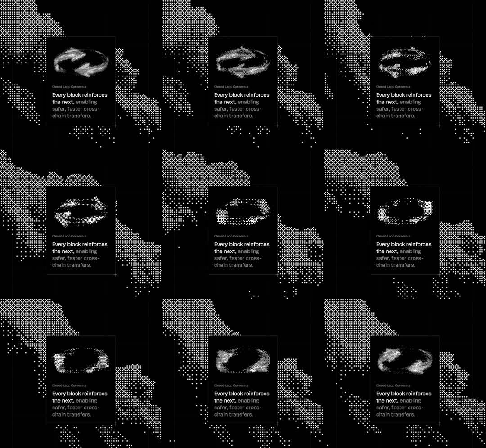

Halftone dot bento card: dark crypto bento card whose artwork is a ring rendered entirely in white halftone dots that churns and swirls; behind the card a giant world map is drawn in the same dot language, its continents shimmering as dot sizes modulate.
Media
Frame-by-frame

0-100%
Black canvas; world map in white dots of varying radius (halftone); centered dark card with 1px white/10 border containing a dot-matrix ring (two swirling arcs of dots) that rotates/morphs - dots cycle size with a traveling sine so the ring looks alive; caption 'Closed-Loop Consensus', title 'Every block reinforces the next, enabling safer, faster cross-chain transfers.'
Build prompt
Rebuild this interaction 1:1: a halftone dot bento card - dark crypto bento card whose artwork is a ring rendered entirely in white halftone dots that churns and swirls; behind the card, a giant world map drawn in the same dot language, continents shimmering as dot sizes modulate.
## Integration
Integration: stack-agnostic spec - springs given as stiffness/damping, timed motions as duration + curve, canvas/shader notes are perf guidance only; map every value to your framework and animation library of choice.
## Scene
Black canvas: world map in white dots of varying radius (halftone). Centered dark card (1px white/10 border) containing a dot-matrix ring - two swirling arcs of dots - plus caption "Closed-Loop Consensus" and title "Every block reinforces the next, enabling safer, faster cross-chain transfers."
## Motion spec
Pattern: ambient dot-field animation.
- Ring: dots cycle radius with a traveling sine so the two arcs look alive; the ring slowly rotates/morphs (~10s/rev).
- Map: a shimmer wave (~4s period) travels across continents, modulating dot sizes.
- Text and card chrome: perfectly still.
## Calibration
- Ring rotation ~10s/rev, shimmer ~4s - two slow rhythms that never sync.
- All texture is dot radius modulation; no opacity flicker, no color change.
- The ring is two arcs, not a closed circle - the gap is the logo.
## Reduced motion
Ring and map render as static halftone frames.
## Don't miss
- Map and ring share one dot language - same grid logic, different fields; that's the coherence.
- Dots never fully vanish at sine troughs (floor at ~15% radius); disappearing dots read as flicker.
- Card text is the only non-dot element and it is absolutely still.
Mechanics
trigger
autoplay ambient
elements
halftone world map background, dot-ring artwork, card text block
properties
per-dot radius (sine field + time), ring rotation, map shimmer